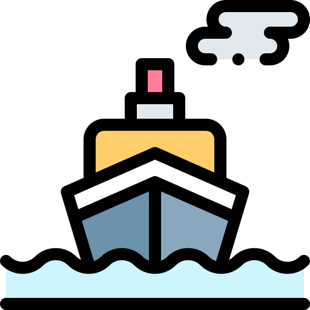
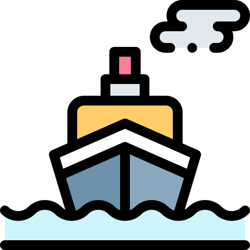

I'm Nouh.
a programmer


My name is Nouh, I am 25 years old. I am a computer science engineer. I am here to help you in my areas of expertise.
Programming is one of my favorite hobbies, I develop mobile applications with the Flutter framework for both Android and iOS platforms, I am also a web developer using different technologies such as Boostrap and Wordpress.
I am a tester with about 2 years of experience in stress testing in different project and technology environments.I use tools such as Jmeter and Noeload.
Monitoring our information systems is one of the best ways to save time and be more efficient in solving problems whether they are infrastructure related or application related. For that I chose to be certified as a nagios administrator my certification id is : D7SU79.
© 2021 Nouh BELFKIRA.